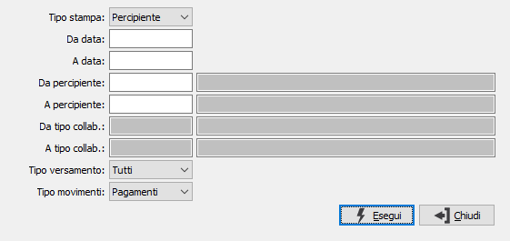

Stampa situazione movimenti
Il programma permette di ottenere una stampa dei movimenti inseriti all’interno della gestione percipienti. E’ possibile selezionare i soli movimenti di pagamento per verificare l’esattezza dei dati e degli importi prima di effettuare i versamenti oppure includere anche i documenti (fatture/ricevute) non ancora pagamenti per verificare la situazione debitoria nei confronti dei propri percipienti.

TIPO STAMPA: determina la stampa da ottenere. Valori possibili: Percipiente; Tributo.
DA DATA: indicare la data del movimento con cui iniziare la stampa. Il campo è obbligatorio.
A DATA: indicare la data del movimento con cui terminare la stampa. Il campo è obbligatorio.
DA PERCIPIENTE: indicare il codice del percipiente, se tipo stampa Percipiente, con cui iniziare la stampa. Sul campo sono attive le funzioni di ricerca (F9).
A PERCIPIENTE: indicare il codice del percipiente, se tipo stampa Percipiente, con cui terminare la stampa. Sul campo sono attive le funzioni di ricerca (F9).
DA TIPO COLLABORAZIONE: indicare il codice del tributo, se tipo stampa Tributo, con cui iniziare la stampa. Sul campo sono attive le funzioni di ricerca (F9).
A TIPO COLLABORAZIONE: indicare il codice del tributo, se tipo stampa Tributo, con cui terminare la stampa. Sul campo sono attive le funzioni di ricerca (F9).
TIPO VERSAMENTO: specifica il tipo di versamento per cui effettuare la stampa. Valori possibili: Tutti; Da versare; Versati.
TIPO MOVIMENTI: specifica il tipo di movimento per cui effettuare la stampa. Valori possibili: Tutti; Documenti; Pagamenti.